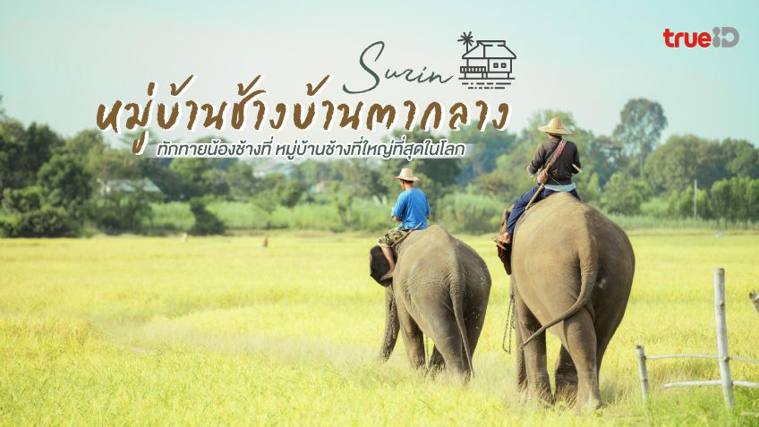

ปราสาทศีขรภูมิ
คลิกเพื่ออ่านประวัติและความงามอันล้ำค่า
สัมผัสความวิจิตรตระการตาแห่งอารยธรรมขอมโบราณ และมนต์เสน่ห์แห่งผืนแผ่นดินทอง
คลิกเพื่ออ่านประวัติและความงามอันล้ำค่า

คลิกเพื่อดูวิถีชีวิตคชศาสตร์ระดับโลก
.jpg)
คลิกเพื่อชมความประณีตแห่งสถาปัตยกรรม
.jpg)
คลิกเพื่อสัมผัสศิลปะการทอผ้ายกทองชั้นสูง
ปราสาทขอมโบราณอายุกว่าพันปี โดดเด่นด้วยภาพสลักนางอัปสราที่สมบูรณ์และงดงามที่สุดในสุรินทร์ สร้างขึ้นในพุทธศตวรรษที่ 17 สำหรับประกอบพิธีกรรมทางศาสนาฮินดู ลวดลายการแกะสลักหินทรายมีความคมชัดและทรงคุณค่าทางประวัติศาสตร์อย่างยิ่ง
หมู่บ้านช้างที่ใหญ่ที่สุดในโลก ณ ศูนย์คชศึกษา เป็นสถานที่ซึ่งคนและช้างอาศัยอยู่ร่วมกันเสมือนสมาชิกในครอบครัว ท่ามกลางบรรยากาศธรรมชาติริมแม่น้ำมูล เรียนรู้วัฒนธรรมและสายสัมพันธ์อันแนบแน่นระหว่างชาวกูยกับช้างคู่บ้านคู่เมือง
โบราณสถานศิลปะแบบบาปวน โดดเด่นด้วยงานแกะสลักหินทรายอันประณีต คมชัด ลวดลายกลีบดอกไม้และเทวดานพเคราะห์บนหน้าจั่วแสดงถึงความใส่ใจในรายละเอียด ถือเป็นหนึ่งในปราสาทหินขนาดเล็กที่มีความงดงามสมบูรณ์ที่สุดในประเทศไทย
สัมผัสเทคนิคการทอผ้าชั้นสูงแบบราชสำนักจากกลุ่ม "จันทร์โสมา" ฟื้นฟูและสืบสานศิลปะการทอผ้ายกทองโบราณ ลวดลายมีความวิจิตรอลังการ ใช้เส้นไหมทองแท้ถักทอด้วยความประณีตระดับโลกจนเป็นที่ประจักษ์ในระดับสากล
.jpg)
ก.พ. งานผ้าไหมและปะเกือม
มี.ค. สืบสานตำนานปราสาทช่างปี่
เม.ย. บวชนาคช้าง / สงกรานต์ช้าง
ก.ค. ตักบาตรบนหลังช้าง
ต.ค. ประเพณีแซนโฎนตา
พ.ย. มหัศจรรย์งานช้างสุรินทร์ (ห้ามพลาด!)
ธ.ค. เทศกาลปลาไหลและข้าวใหม่
เด่น: ผ้าไหม, ข้าวหอมมะลิ (ทุ่งกุลาร้องไห้), เครื่องเงินบ้านเขวาสินรินทร์
กิน: ผักกาดดอง, เนื้อโคคุณภาพ, กุนเชียง
สัญลักษณ์: ช้าง, ปราสาทหินโบราณ
ที่น่าเที่ยว: วนอุทยานพนมสวาย, อ่างเก็บน้ำห้วยเสนง, พิพิธภัณฑ์สถานแห่งชาติสุรินทร์, ทะเลสาบทุ่งกุลา, เขาทมอโรย
การเดินทาง: สะดวกสบายด้วย รถไฟ, รถทัวร์, รถยนต์ส่วนตัว และเครื่องบิน